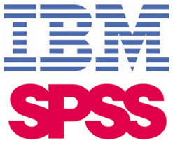

Purpose
This personal website was a project that I created while I was a Senior in college. We had to use HTML, CSS, and JS to construct our own personal website.
Introduction
Within this website, I have created different tabs to store different information about myself. I have created this website purely based on coding elements
Here is a picture of myself

About myself
My name is Christian Tackett, and I am a senior currently studying Management Information Systems at the University of Oklahoma. I will graduate in May of 2021 with a Major in MIS, and a Minor in Marketing. I was born in Denver, Colorado and later moved to Maryland. I finished highschool in Plano, Texas at Plano West Senior Highschool, where I was involved in a numerous amounts of clubs and organizations. I played Basketball and Football in junior high, where I developed strong leadership skills. Given the opportunity to play as the Quarterback in football, I was given a lot of responsibilities. This changed the way that I am today, because I always am the leader in projects that I am assigned within a group.

Projects
Some of the projects that I am most proud of consist of, but not all:
- Database project
- GitHub Repositories
- SAP Simulation
- SPSS Project
I worked extremely hard on these projects, and I am very proud of the results that I was given.

Skills
Here are some of my most important skills I have attributed over the past 4 years.
- Marketing
- Sales
- Microsoft Excel
- Data Analysis
- VBA
- C#
- Microsoft Powerpoint
- Microsoft Word
- SPSS
- IBM SPSS
- Databases

Employment History
Here are some of my most recent and notables emplyments.
- Coldstone Creamery
- Lifetime Fitness : LifeCafe
- Pearls Oyster Bar: Server
- Tackett and Associates: Manufacturer Representative
This is just the beginning of my employment history, and I am looking to change the world with the knowledge that I have.